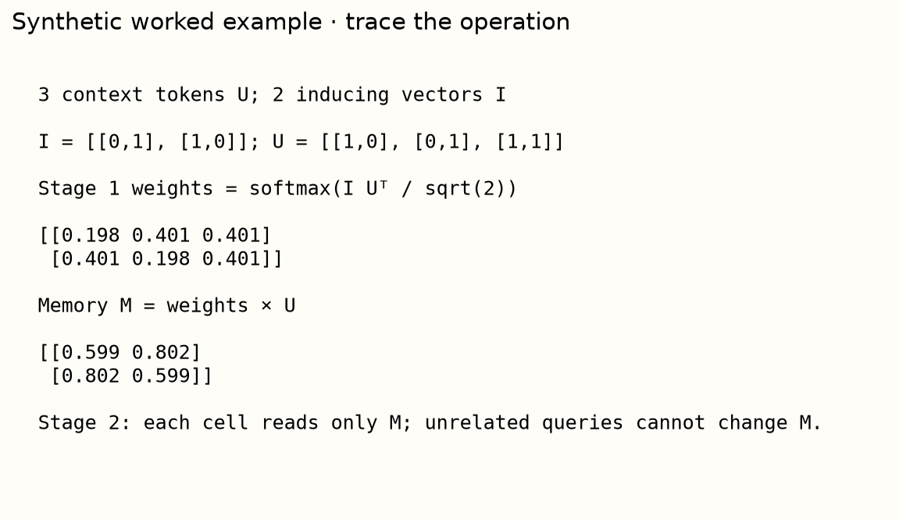
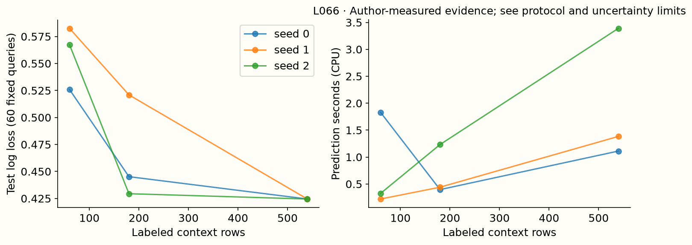

Year 2 · Quarter 3 · Lesson 066
How TabICL builds and uses context
Understand the computation. Challenge the evidence. Produce a defensible result.
Core reading: 35–50 minutes. Lab: 45–75 minutes plus declared experiment time. This sequence builds the strong single-table baseline and information discipline required to test the relational thesis.
Retrieve before reading
Without notes: Does inducing-point column attention make every stage of TabICL linear in rows? Explain why, then recall a related failure mode from an older lesson.
Separate representation construction from in-context prediction¶
Your goal is to implement TabICL's inducing-vector computation, trace the full prediction route and measure what a larger labeled context buys. Read Qu et al., Sections 3–4. TabICL first builds distribution-aware cell and row representations, then applies a dataset-level in-context learner. This separation changes the cost structure compared with repeatedly alternating full table axes.
The paper reports experiments at much larger context sizes than early TabPFN. Those sizes are measured/model regimes, not unconditional guarantees that every table of that row count will fit any GPU. Feature count, query batching, number of ensemble views, precision and available memory still matter. The local timing intervention reaches 540 context rows; the 500,000-row experiment is explicitly unrun.
A cell, a row and a dataset are different objects¶
A scalar value has meaning partly because of its column distribution. The value 100 could be ordinary in one column and extreme in another. A row representation must then combine values from different columns, while a dataset-level predictor must relate that row to labeled examples. TabICL separates these three representational jobs.
The column stage produces distribution-aware cell information. The row stage gathers a row's feature tokens into a fixed-width representation. The dataset-level in-context learner combines row representations and context labels to predict query labels. This separation makes the architecture easier to reason about than treating all attention as one interchangeable operation.
Shared column processing can transfer across feature counts and schemas, but shared weights do not mean every column receives the same output. Different value distributions and scalar inputs can produce different conditioned cell representations. The relevant symmetry concerns how the computation responds to reordered data, not whether all features become identical.
The local lab implements two key column operations. The actual quality and timing measurements use a separately pinned pretrained TabICL checkpoint. A correct inducing-attention function is evidence about that operator; it is not evidence that the untrained local blocks achieve the checkpoint's predictive quality.
Model architecture: column, row, dataset¶
Lesson 066 / architecture study
TabICL · column, row, dataset
Trace this: Which stage compresses the context, and which later stage can still be quadratic?
The forward path
- Build column contextInducing vectors read training-column tokens; every cell then reads the summaries.
C × d → m × d → N × d - Create cell and row representationsContext-conditioned W·x+B; row Transformer gathers feature tokens into four summaries.
4 × 128 → row width 512 - Run dataset-level ICLAdd context labels; a separate Transformer learns from row representations.
N × 512; context-only memory - Predict query labelsQuery states → output MLP → class probabilities.
Q × classes
Inside the key operation
Compression changes one cost term
context rows→m=16
summaries→N=500
cell readers
Score elements per column/head; projection, row and dataset costs are excluded. W and B are cell/context-conditioned, not global constants.
Variant & evidence. Original paper dimensions in the overview; local code isolates inducing and affine operators. Actual timing/quality use pinned v1.1; larger v2 comparisons belong to the later checkpoint.
Start with N rows and F scalar features. A shared column encoder processes each feature's collection of values, using labeled-training rows as the source of distribution information. It generates a hidden vector for each cell. A row Transformer mixes a row's feature vectors and learned summary tokens; concatenated summary outputs form a fixed-width row representation. A final Transformer adds encoded labels for context rows, lets queries attend to context, and feeds query outputs through a class-probability head.
In the original paper configuration, the column and row hidden width is 128; four row summary tokens produce width 512 for the dataset-level learner. The paper uses multiple induced-attention blocks, row-attention layers and a 12-layer final learner. Our visible implementation isolates the inducing-attention and distribution-conditioned affine mechanisms. The actual measured scores use the separately pinned pretrained v1.1 checkpoint, not those untrained reduced blocks.
Compress a column through inducing vectors¶
Let U be the hidden vectors of a column's N scalar values and I be m learned inducing vectors. First compute M = Attention(I, U_context, U_context). Each inducing vector becomes a weighted summary of the training column. Then compute V = Attention(U, M, M): every input cell reads those summaries. Only context rows supply first-stage keys and values; adding an unrelated query cannot change the summaries read by existing rows. This follows the paper's Equations 4–5, with the complete multihead blocks adding learned projections, residual paths and feed-forward transformations.

The second stage produces cell-specific information, not one scalar statistic copied to the entire column. Linear heads generate a scale W and offset B for each cell; the embedding is W*value+B, coordinate by coordinate. If a value is 2, W is [.5,−1] and B is [.1,.3], the resulting vector is [1.1,−1.7]. W and B depend on the column context; they are not globally fixed per-feature parameters. The lab keeps the two operations separate so you can check both the information boundary and the arithmetic.
Inducing vectors are learned readers, not selected records¶
Let U_context contain C hidden token vectors for one training column, and let I contain m learned inducing vectors. The first attention stage uses I as queries and U_context as keys and values. It produces m summaries M. These summaries are weighted combinations of training-column information; they need not equal any actual row.
The second stage uses every cell token U as a query and M as keys/values. Different cells can attend to the same summaries with different weights. This is not simply replacing the entire column with one mean copied into every row.
Consider a deliberately minimal one-summary, one-coordinate example. If the first-stage attention weights on values 2 and 6 are 1/4 and 3/4, the summary is 5. In the second stage there is only one summary, so its attention weight is one for every reader. Every attention output is then 5. This special case exposes the bottleneck; multiple inducing vectors and the full residual/projection blocks permit richer cell-dependent behavior.
In the real operator, first-stage scores depend on learned inducing queries and context keys. The summaries are task-conditioned even though the inducing parameters are shared across tasks. Increasing m increases the capacity and cost of this intermediate memory, but it does not guarantee a monotonic quality gain for a fixed pretrained system.
Only training/context rows supply first-stage keys and values in the declared path. Appending a query must not change M. The query can read M and produce its own output, but it cannot alter the memory read by other queries. This is the column-stage counterpart of the query-isolation argument from the PFN mask lesson.
The affine embedding is conditioned on the column¶
Linear heads applied to the induced cell state produce vectors W and B. The scalar value x is embedded as W·x+B coordinate by coordinate. For x=2, W=(0.5,−1), B=(0.1,0.3), the result is (1.1,−1.7).
Unlike a fixed feature tokenizer, these W and B can depend on the cell's context-aware hidden state. The same raw value can therefore receive a different representation under a different column distribution. This is the mechanism behind “distribution-aware,” not a promise that the encoder computes a named statistic such as a z-score exactly.
Learned inducing vectors are not k-means centroids¶
An inducing vector is a parameter used as an attention query. Gradient descent changes it according to the eventual prediction objective. A centroid is typically a summary of data points obtained by minimizing a geometric clustering objective. Both can summarize a distribution, but their definitions and update rules differ.
The first attention stage turns each learned query into a task-specific weighted summary. The inducing parameter itself is shared across tasks; its output M depends on the current context. Confusing these two objects makes it sound as though the model stores fixed summaries of every future dataset before seeing it.
Gradients can flow through the softmax weights and weighted values into the inducing queries and token encoders during pretraining. At inference, those parameters are fixed while the summaries change with the supplied context. This is another instance of the distinction between parameter adaptation and context conditioning.
With too few inducing vectors, different column distributions may be compressed into insufficiently informative summaries. More vectors increase representational capacity and attention work, but a pretrained checkpoint's learned settings cannot be changed arbitrarily without considering compatibility and training. The local operator's m knob teaches cost and information flow; it is not a free guarantee of better checkpoint accuracy.
What becomes cheaper, and what remains quadratic?¶
Full self-attention over N rows forms N² scores per head. Inducing attention uses roughly m*C + N*m scores for one column, where C is context length. With fixed m this column stage grows linearly in row count. But the final dataset-level learner still contains context attention. Calling the entire method “linear attention” would erase that remaining cost.
The cost exhibits in lessons 64 and 70 display column, row and dataset score-element counts separately, holding feature count and inducing count explicit. These are accounting identities for a simplified attention layout, not a peak-memory estimator. The paper's efficient inference also uses batching and memory-management techniques. Measure actual runtime and memory before claiming a hardware ceiling.
Reducing one quadratic term does not linearize the system¶
Full self-attention over C context tokens forms C² score elements per head. The two inducing stages form mC and Nm, where N includes all cell readers. With C=N=500 and m=16, their total is 16,000, compared with 250,000 for full 500×500 attention.
This arithmetic isolates one column and one head. Multiply by feature count and account for layers to describe that stage more fully. Projection and feed-forward costs depend on hidden width, while activation storage depends on implementation and precision. Score counts are useful predictors of scaling pressure, not complete runtime or peak-memory estimates.
The row Transformer attends across feature tokens, so its work depends on feature count and summary tokens. The final dataset learner attends across row representations and retains a context-dependent quadratic component. A large-context claim must account for all three stages and the implementation's batching/caching strategy.
Retrieval reduces the number of examples passed to a predictor. Inducing attention compresses information through learned summary vectors inside the representation computation. Both can reduce some costs, but they discard or transform information differently. An inducing vector is not a nearest-neighbor ID, and a retrieved row retains its actual label/feature identity.
For the measured context-size experiment, keep query IDs fixed while growing nested contexts. Then the quality change concerns additional context information for the same evaluation rows. Record context preparation and prediction separately, because a larger context can increase one cost more than the other.
Feature symmetry has a trade-off¶
If row attention treats equally distributed columns as indistinguishable, different rows that permute those feature values can collapse to similar representations. TabICL uses rotary positional embeddings in row attention to distinguish feature positions. RoPE rotates query/key coordinates by position-dependent angles; this introduces an ordering signal. Ensembling over column permutations can reduce sensitivity, but it is not exact feature-permutation invariance for one fixed view. Paper Section 3.3.
This is a useful correction to “tables have no natural feature order, so any ordering signal is wrong.” Columns also have identities. A suitable model must represent those identities without making arbitrary serialization choices dominate prediction. Your architecture trace should explain both the symmetry goal and the symmetry-breaking device.

Measured interpretation. With identical 60 query rows, mean log loss is 0.5586 at context 60 and 0.4245 at context 540. Mean prediction time rises from 0.792s to 1.962s. One task and three nested context draws do not establish the paper's large-data benchmark claim.
Inspect the numerical evidence table
| log_loss | predict_seconds | |
|---|---|---|
| context | ||
| 60 | 0.5586 | 0.7920 |
| 180 | 0.4652 | 0.6896 |
| 540 | 0.4245 | 1.9615 |
Permutation symmetry must preserve feature meaning¶
Rows are often exchangeable within a static context, but feature columns have identities. Swapping age and income values without also swapping the corresponding feature identity changes the row's meaning. A model that erased every distinction between equally distributed columns could collapse rows that should have different predictions.
The paper's row attention uses rotary positional information to distinguish feature positions. RoPE rotates query/key coordinate pairs by position-dependent angles, so attention scores can depend on relative positions. It introduces an ordering signal; it is not exact feature-permutation invariance for one fixed serialization.
Ensembling over column permutations can reduce sensitivity to an arbitrary chosen order. It averages several valid views when the accompanying feature representation is transformed consistently. It does not prove that every single-view prediction is unchanged under every permutation.
Test the distinction explicitly. First permute values and identities together under a supported view transformation; then consider the different intervention of swapping values while retaining identities. The first probes serialization sensitivity, while the second changes the semantic input. Their outputs need not behave the same way.
Tie the bottleneck explanation to measurements¶
If prediction time rises with context, use the architecture to identify candidate causes, then profile the actual path. A column-stage asymptotic argument cannot tell you whether dataset attention, preprocessing or Python overhead dominated a small CPU run.
The local experiment reaches hundreds of context rows, while the paper discusses much larger regimes. Preserve that gap in the conclusion. The exit should show the inducing calculation, the context-only boundary, the cell-affine trace and a measured cost/quality change with its scope. This is enough to explain the architecture rigorously without pretending to have reproduced its largest-scale result.
Exit: explain the bottleneck you measured¶
Implement the two attention stages and conditional affine map. Change an unrelated query and prove that existing cell outputs remain fixed. Then measure nested contexts of 60, 180 and 540 labeled rows with the same query rows, checkpoint and one-view setting. Report accuracy/log loss and context-preparation versus prediction time across seeds; do not turn this one-task scale intervention into a universal accuracy comparison.
Use the five-dataset checkpoint evidence for broader comparisons. State which part of the architecture you implemented, which pretrained version produced measurements, and which large-context result remains a cited paper claim. Explain why a retrieval method and an inducing-vector method reduce different costs even though both summarize a large context.
Run the companion lab
What you will do: Implement inducing attention and distribution-conditioned cell embeddings. The default exercise isolates a column mechanism; pretrained TabICL context scaling is separate.
induced_column: Compress training keys/values into inducing summaries, then let every cell read those summaries.distribution_embedding: Use the induced cell states to generate W and B, then form a per-cell affine embedding.
Author-reference evidence: Actual TabICL v1.1 predictions at context sizes 60, 180, and 540, with three seeds.
Submit: your completed notebook and student-l066-exit.json, plus your written interpretation. CHECK cells give immediate code feedback; paste the EXIT output here for a reasoning review.
Student notebook · Prepared lab · Open in Colab
2 substantive code tasks feed the live experiment, followed by behavioral CHECKs and a written EXIT artifact. The notebook contains the explanation and portable figures so it is teachable independently.
Ask me follow-up questions about any operation, CHECK or conclusion you cannot defend. Paste the EXIT artifact and your explanation for review. Revisit the retrieval question tomorrow and again in a week, before reopening the reference.